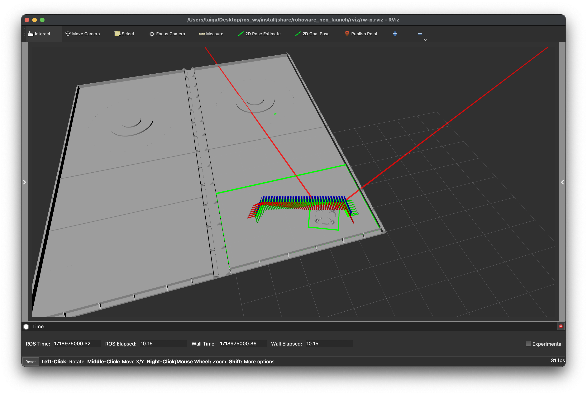
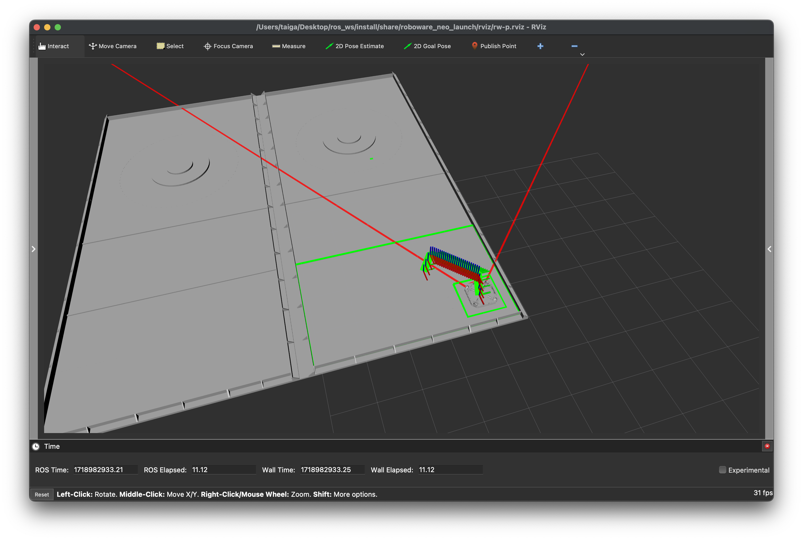
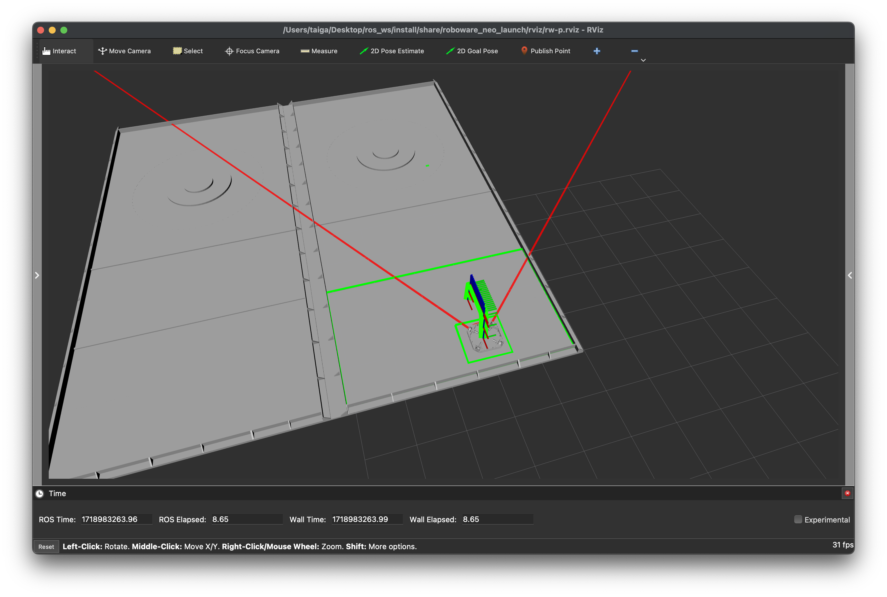

Tutorials#
Scenario Planning Simulation#
Basic Scenario#
This is a simulation to test a basic scenario.
-
Launch Roboware-neo:
ros2 launch roboware_neo_launch planning_sim.launch.xml
-
Exit the simulation:
Once the scenario has finished running, exit by pressing
ctrl-cin the terminal. -
Check the scenario flow chart:
Let's check the scenario that was just executed at
roboware-neo.universe/launch/roboware_neo_launch/state_graph/s-graph.md. You will see that the SETPOSE command is executed three times.graph TB START(START) --> SETPOSE.1(SETPOSE:x=-0.8,y=2.0,z=90.0) SETPOSE.1 --> SETPOSE.2(SETPOSE:x=-4.0,y=1.8,z=180.0) SETPOSE.2 --> SETPOSE.3(SETPOSE:x=-0.9,y=0.9,z=270.0) SETPOSE.3 --> END(END)
If Statement Scenario#
This scenario runs a more complex simulation involving if statements.
-
Edit the launch file:
Edit
roboware-neo.universe/launch/roboware_neo_launch/launch/planning/mission_manager.launch.xmlas follows:<launch> <!-- <arg name="graph_path" default="$(find-pkg-share roboware_neo_launch)/state_graph/s-graph.md"/> --> <arg name="graph_path" default="$(find-pkg-share roboware_neo_launch)/state_graph/c-graph.md"/> <!-- <arg name="graph_path" default="$(find-pkg-share roboware_neo_launch)/state_graph/scenario_simulation/rotation.md"/> --> <!-- <arg name="graph_path" default="$(find-pkg-share roboware_neo_launch)/state_graph/scenario_simulation/loop.md"/> --> <node pkg="mission_manager" exec="mission_manager_node" output="screen"> <remap from="output/task_action" to="/planning/state_transition/task_action"/> <remap from="input/action_result" to="/planning/state_transition/action_result"/> <param name="graphpath" value="$(var graph_path)"/> <param name="endmode" value="shutdown"/> </node> <node pkg="mission_manager" exec="ar_marker_strategy_node" output="screen"> <remap from="output/action_result" to="/planning/state_transition/action_result"/> <remap from="input/task_action" to="/planning/state_transition/task_action"/> <remap from="input/marker" to="/perception/ar_marker/marker"/> </node> </launch> -
Launch Roboware-neo:
ros2 launch roboware_neo_launch planning_sim.launch.xml
-
Check the scenario flow chart:
Check the executed scenario at
roboware-neo.universe/launch/roboware_neo_launch/state_graph/c-graph.md. The flow chart shows an if-else branch where the robot either returns to the start position or moves backward based on whether it finds the marker ID-6. By default, it does not find ID-6 and moves backward.graph TB START(START) --> SETPOSE.1(SETPOSE:x=-2.0,y=2.0,z=270.0) SETPOSE.1 --> FIND.1(FIND:type=armarker,name=6,var=id5pos) FIND.1 -- TRUE --> SETPOSE.2(SETPOSE:x=-2.0,y=0.9,z=270.0) FIND.1 -- FALSE --> SETPOSE.3(SETPOSE:x=-0.9,y=0.9,z=270.0) SETPOSE.2 --> END(END) SETPOSE.3 --> END(END) -
Change the graph:
Edit
roboware-neo.universe/launch/roboware_neo_launch/state_graph/c-graph.mdto change the marker ID to 5.``````mermaid graph TB START(START) --> SETPOSE.1(SETPOSE:x=-2.0,y=2.0,z=270.0) SETPOSE.1 --> FIND.1(FIND:type=armarker,name=5,var=id5pos) FIND.1 -- TRUE --> SETPOSE.2(SETPOSE:x=-2.0,y=0.9,z=270.0) FIND.1 -- FALSE --> SETPOSE.3(SETPOSE:x=-0.9,y=0.9,z=270.0) SETPOSE.2 --> END(END) SETPOSE.3 --> END(END) -
Launch Roboware-neo:
ros2 launch roboware_neo_launch planning_sim.launch.xml